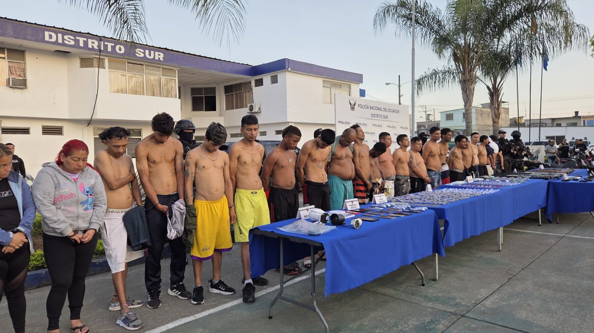

Concurso de Fiscal General: Daniella Camacho lidera la lista tras evaluación de 28 aspirantes

El proceso para designar a la máxima autoridad de la Fiscalía General del Estado continúa su curso en Ecuador. La comisión ciudadana de selección avanzó con la evaluación de méritos de los 28 aspirantes que superaron la fase de admisión, en una sesión que se extendió hasta altas horas de la noche del viernes 8 de mayo de 2026.
En Pascuales, Guayaquil, hallaron a un hombre amarrado y baleado: Le dieron dos tiros y se fueron

Poco después de llegar a su vivienda, en la parroquia Pascuales, en Guayaquil, un hombre se asustó al escuchar disparos. Luego de esperar unos cinco minutos por seguridad, salió de su vivienda y vio a un ciudadano tirado delante de un camión.
Caso Nina Bananas: Cae red que enviaba droga en chifles desde Guayaquil

La Fiscalía ha desartado una red que enviaba droga en chifles desde Guayaquil hacia otras ciudades del país. La operación fue llevada a cabo por agentes de la unidad de investigación especializada en delitos de tráfico de drogas.
Operativo en la Zona 8: 21 adultos aprehendidos, tres menores aislados y varias armas

Durante un operativo ejecutado entre la noche del viernes 8 de mayo y la madrugada de este sábado, 21 personas fueron aprehendidas en la Zona 8 (Guayaquil, Durán y Samborondón) y tres menores fueron aislados, por estar presuntamente implicados en hechos delictivos.
Así celebraron los planteles de Guayaquil el Día de la Madre

Los planteles educativos de Guayaquil vivieron una jornada llena de emociones, música y actividades artísticas en el marco de la celebración por el Día de la Madre, una fecha que reunió a estudiantes, docentes y padres de familia en un ambiente de integración, reconocimiento y unión familiar.
Arcsa y Acess clausuran establecimiento de procedimientos estéticos en Urdesa
La Agencia de Aseguramiento de la Calidad de los Servicios de Salud y Medicina Prepagada (Acess) junto con la Agencia Nacional de Regulación, Control y Vigilancia Sanitaria (Arcsa), ejecutó un operativo en el sector de Urdesa, norte de Guayaquil, tras denuncias ciudadanas difundidas a través de redes sociales sobre presuntos procedimientos estéticos realizados de manera irregular.